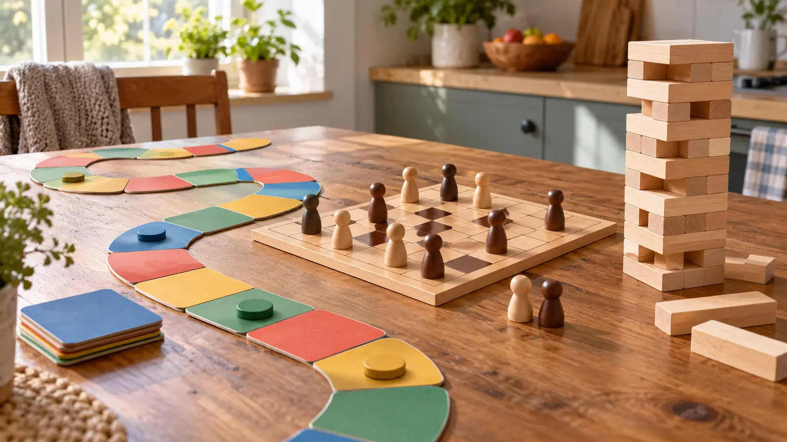

Cooperative path or puzzle game
Fits: a group that wants a shared result. Tradeoff: direct rivalry drops, but one strong player may dictate every move. Give the active player the final choice.
AT HOME · 45 MINUTES · AGES 6–12 · AUTHORITY-EXPANSION
A game that fits the shelf but not the people is clutter. Choose the kind of decisions your children can make tonight, then leave enough time to finish and put it away.

Write down the number of actual players, the least confident reader, the available table space and the minutes left before bedtime. Count the adult who is really playing, not the adult cooking in the next room. A four-player box does not automatically produce a satisfying two-player game. A child can meet the age label and still hate the amount of reading, direct conflict or waiting.
Our recommendation is a selection method, not a tested ranking. Read the current publisher’s rulebook before ordering. Watch for required apps, accounts, reading, hidden information and replacement-part arrangements. Age labels and warnings remain mandatory selection checks; the family fit test does not override them.
Five minutes is our school-night teaching budget, not a manufacturer claim. A thoughtful longer game is not a bad game; it may simply be the wrong Tuesday game. Keep the time-window reset honest.
Race to the Treasure!: Peaceable Kingdom’s current MindWare listing describes a cooperative path-building game for ages 5 and up and provides downloadable instructions. That makes it an example for investigating shared planning. It does not prove fit for every six-year-old or guarantee a conflict-free session. Check the exact rules, player count and small-parts warning before purchase.
Labyrinth, article 26448: Ravensburger currently lists 2–4 players, ages 7+, and approximately 20–30 minutes. The board changes as players shift maze tiles. It is an example of light spatial competition, not a promise that first-time teaching and cleanup fit into that printed play time. Different editions can change components and rules; use the matching manual.
Both publisher pages below are useful non-affiliate fallbacks. We are not asserting hands-on testing, superior development outcomes, live stock, a fixed price or endorsement. For dexterity games, apply the physical-fit card to the exact product instead of selecting by a falling-tower photograph. Borrowing may answer the question more cheaply than another comparison list.
Do not start a second full game just because the first ended happily. That is often the right ending. When one child needs individual attention rather than another group activity, use the one-on-one time framework.
The CPSC advises following age and safety information and keeping small-part toys away from children under three. Check the current recall database by brand and model, including used games. Secure all pieces from younger siblings and pets; do not assume a school-age label makes the room safe for a toddler.
Ten minutes: learn one legal turn and pack away; call it practice, not a completed game. Mixed abilities: use open information or teams only where the rules permit, with the child still making choices. Noise-sensitive room: choose a quiet cardboard format over tumbling blocks. Weather cancels the outing: the game can fill one block, not the whole day. Follow it with the no-shopping living-room picnic or a genuine rest period.
Skip game night when every participant is depleted, the room cannot safely contain components or a child is being compelled to enjoy losing. A short reading session is a legitimate plan. The goal is shared time, not proving that the new purchase was worth it.
Reviewed October 18, 2026 by Mr Adventure Dad Editorial Desk. Format tradeoffs, the purchase card and 45-minute script are editorial judgments. Manufacturer facts are linked above; this is not a clinical or educational-outcome claim. Send corrections through About. The clearly disclosed comparison links below are commercial category searches, not approved-product or recall-clearance lists.
MAKE THE WEEK COUNT
Build the plan your family can finish well, then leave enough energy for the next part of the day.
More family plansTHE USEFUL STUFF
These are practical categories to compare—not a reason to overpack. Check fit, specifications and current reviews before buying.
Paid links: As an Amazon Associate I earn from qualifying purchases. You pay no additional cost.
Check the exact age label, reading load, player count, shared-decision rules and small-parts warning. Cooperation does not eliminate adult over-coaching.
See current options → COMPARE ON AMAZONRead the matching edition’s manual: count real players, turn waiting, conflict, elimination, teaching and cleanup before buying.
See current options → COMPARE ON AMAZONCheck piece size, stable table space, reach, motor fit, noise and younger-sibling access. Physical play is not automatically the right fit.
See current options →